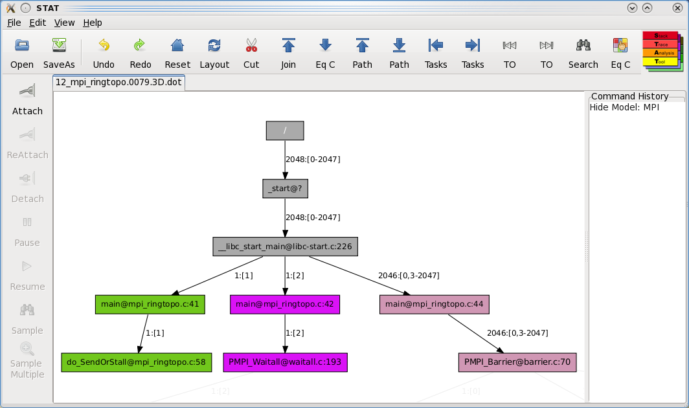
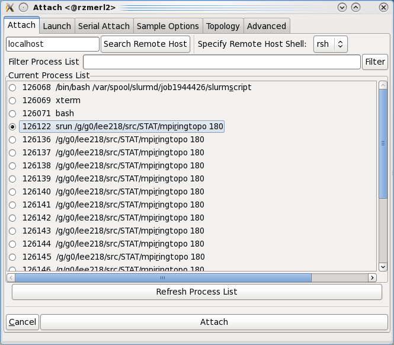
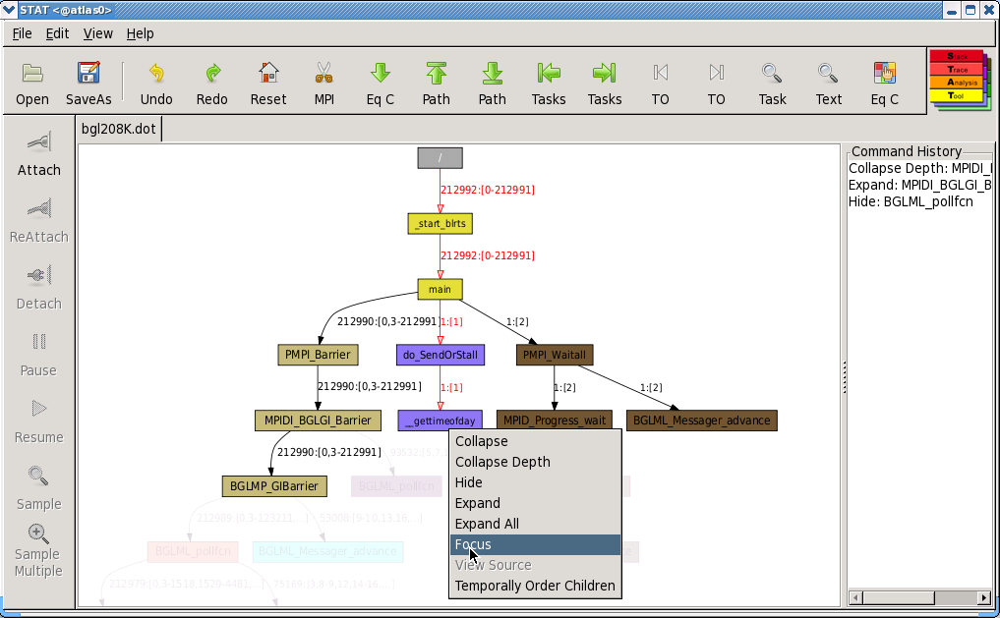
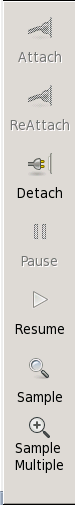
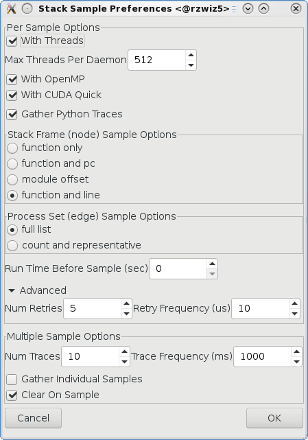
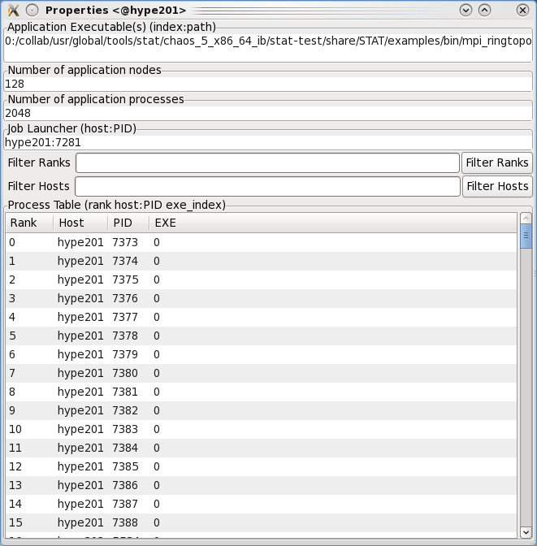
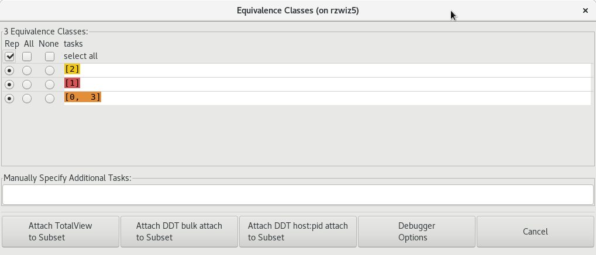

Using the stat-gui GUI¶
Description¶
STAT includes a graphical user interface (GUI) to run STAT and to visualize STAT's outputted call prefix trees (Fig. 10). This GUI provides a variety of operations to help focus on particular call paths and tasks of interest. It can also be used to identify the various equivalence classes and includes an interface to attach a heavyweight debugger to the representative subset of tasks.


Fig. 10 A screenshot of the STAT GUI¶
Quick walkthrough¶
After launching the GUI via the stat-gui command you will first need to attach to the application via the Attach button. This will bring up the attach dialog (Fig. 11). You will need to select the job launcher (i.e., mpirun, srun, or equivalent process). STAT will list processes owned by you on the localhost. If your job launcher process is on a remote host, you will need to enter that hostname in the remote host text entry box. Contact your local system administrator if you are not sure where to find your job launcher process. Once the appropriate process has been selected, click on the Attach in the lower right hand corner. STAT will then launch its daemons and gather an initial stack trace.


Fig. 11 Use the attach dialog to select the job launcher process to attach to.¶
Once STAT has displayed the initial merged stack trace, in the form of a prefix tree, first you may want to look for common buggy patterns. This can be accomplished by using the analysis buttons in the toolbar across the top of the window. This includes operations to look for outliers such as processes with the shortest or longest stack trace or for the stack trace that was exhibited by the least or most processes. Note that these buttons are "traversal" buttons and they all initially operate on the full prefix tree. For example, the first click of the [Shortest] Path button will display the shortest path and subsequent clicks will display the next shortest path. Oftentimes bugs in parallel applications are triggered by a single or small subset of outliers in which case the [Least] Tasks button can quickly identify the outliers. Another common behavior is for a small subset of processes to be hung and the rest of the processes to be blocked in an MPI barrier or collective. In this case, the hung subset of tasks may have a shorter call path than the tasks in blocking in MPI, since the MPI implementation will usually be several frames deep. In this case, the [Shortest] Path can be useful.


Fig. 12 A screenshot of the STAT GUI.¶
Alternatively, you may wish to manually search through the stack traces. There are several buttons to aid in this process too. The [Traverse] Eq C will traverse the prefix tree, with each click traversing the down to the next point where there is a branch in equivalence classeses. There is also a Search button to search for specific MPI ranks, for stack frames with specified text, or for tasks running on specified nodes. Finally, left or right clicking on a node in the prefix tree gives you the option to expand or collapse the prefix tree. Note also that you can zoom in and out of the prefix tree using the options in the View menu or by using the scroll button on your mouse. You can also hold the left mouse button to "grab" the whitespace in the displayed prefix tree and move the focus around.
Another helpful button is the Cut button, which allows you to cut the tree at frames below a specified programming model's implementation. For example, [Cut] MPI will cut any frames below an MPI function call, thus allowing you to focus on application code as opposed to the MPI implementation stack frames. You can define your own programming model on the fly via the Add Model button. Default programming models are defined in the installation $prefix/etc/STAT/STATview_models.conf file or in the user $HOME/.STATview_models.conf file. Programming models are specified as regular expressions, using Python's re module syntax, and the re.search function is used in favor of re.match.
By default, the initial sample will gather stack traces at the granularity of function names. You can gather an additional sample with more detail, by clicking on the Sample button and selecting the function and line radio button. Note this typically requires that the code be compiled with the -g flag to get the appropriate debug information. After clicking OK a new prefix tree will be generated. By gathering stack traces with line number information, you may now associate stack traces back to the source code using the View Source button after clicking on a node in the prefix tree (Fig. 7).
STAT was not intended to be a full-featured debugger, so you may ultimately need to employ another debugger such as DDT or TotalView for root cause analysis. STAT includes an interface to launch either of these debuggers (where available) on a subset of the MPI tasks based on the equivalence classes that STAT identifies. This interface can be accessed through the [Identify] Eq C button in the upper right hand corner of the window. In order to allow the other debuggers to attach, STAT will first detach itself from the application. Pinpointing a bug may require several iterations of running STAT on the entire application and running a full-featured debugger on a subset. After detaching a full-featured debugger, you can quickly attach to your application again with the ReAttach button.
stat-gui Options¶
- -a, --attach [hostname:]PID
Attach to the parallel job with resource manager [hostname:]PID.
- -P, --withpc
Sample program counter values in addition to function names.
- -m, --withmoduleoffset
Sample module offset only.
- -i, --withline
Sample source line number in addition to function names.
- -o, --withopenmp
Translate OpenMP stacks to logical application view
- -U, --countrep
Only gather edge labels with the task count and a single representative. This will improve performance at extreme (i.e., over 1 million tasks) scales.
- -w, --withthreads
Sample stack traces from helper threads in addition to the main thread.
- -y, --withpython
Where applicable, gather Python script level stack traces, rather than show the Python interpreter stack traces. This requires the Python interpreter being debugged to be built with -g and preferrably -O0.
- -C, --create arg_list
Launch the application under STAT's control. All arguments after -C are used to launch the app. Namely, arg_list is the command that you would normally use to launch your application.
- -I, --serial arg_list
Attach to a list of serial processes. All arguments after -I are interpreted as processes. Namely, arg_list is a white-space-separated list of processes to attach to, where each process is of the form [exe@][hostname:]PID.
- -d, --debugdaemons
launch the daemons under the deubgger
- -s, --sleep time
Sleep for time seconds before attaching and gathering traces. This gives the application time to get to a hung state.
- -l, --log [FE | BE | CP]
Enable debug logging of the FE frontend, BE backend, CP communication process, SW Stackwalker, SWERR Stackwalker on error. Multiple log options may be specified (i.e., -l FE -l BE).
- -L, --logdir log_directory
Dump logging output into log_directory. To be used with the
--logoption.- -M, --mrnetprintf
Use MRNet's printf for STAT debug logging.
- -G, --gdb
Use (cuda-)gdb to drive the daemons. If you are using cuda-gdb and want stack traces from cuda threads, you must also explicitly specify -w.
- -Q, --cudaquick
When using cuda-gdb as the BE, gather less comprehensive, but faster cuda traces. Cuda frames will only show the top of the stack, not the full call path. This also defaults to display filename and line number and will not resolve the function name.
The stat-gui GUI Toolbar¶
In addition to the operations provided by stat-view, stat-gui provides a toolbar (Fig. 13) to control STAT's operation.


Fig. 13 The STAT GUI toolbar.¶
- Attach
Attach to your application and gather an initial sample.
- ReAttach
Reattach to the parallel application and gather an initial sample.
- Detach
Detach from your application.
- Pause
Put the application in a stopped state.
- Resume
Set the application running.
- Sample
Gather and merge a single stack trace from each task in your parallel application. The application is left in a stopped state after sampling.
- Sample Multiple
Gather and merge multiple stack traces from each task in your parallel application over time. The application is left in a stopped state after sampling.
Sample Options¶
STAT has several options for stack trace sampling (Fig. 14).


Fig. 14 The stat-gui operation toolbar.¶
These options are defined as follows:
- With Threads
Sample helper threads in addition to the main thread.
- Max Threads Per Daemoncount
Allow sampling of up to count threads per daemon.
- With CUDA Quick
When using cuda-gdb as the BE, gather less comprehensive, but faster cuda traces. Cuda frames will only show the top of the stack, not the full call path. This also defaults to display filename and line number and will not resolve the function name.
- With OpenMP
Translate OpenMP stacks into logical application view (requires application built with OMPD-enabled OpenMP)
- Gather Python Traces
Where applicable, gather Python script level stack traces, rather than show the Python interpreter stack traces. This requires the Python interpreter being debugged to be built with -g and preferrably -O0.
- function only | module offset | function and pc | function and line
Sample traces with function name only, or module name and offset, or function name with the CPU program counter, or function name with the source file and line number. When gathering the module and offset, you can later translate all of the node labels into source file and line number via the GUI (left or right click on a node).
- full list | count and representative
Sample traces with the full task list or just the count and a single representative. When gathering the count and representative, you can actually query an individual STAT graph node (through the left-click menu) for the full edge label, as long as the STAT session is still attached.
- Run Time Before Sample
Resume the application and let it run for the specified amount of time before gathering the sample
- # Retries/Retry Frequency (Advanced)
Sometimes a process may be in a state (i.e., function prologue or epilogue) such that a complete stack trace may not be obtainable. This option controls how many times to retry sampling and how often to wait (in microseconds) between retries to try and get a complete trace.
- # Traces/Trace Frequency
When sampling multiple traces over time, these options specify how many traces to gather per process and how long to wait between samples.
- Gather Individual Samples
When sampling multiple traces over time, this option enables STAT to gather all of the intermediate 2D prefix trees in addition to the fully merged 3D prefix tree. The traces will be displayed in individual tabs.
- Clear On Sample
When sampling multiple traces over time, STAT accumulates the traces that are gathered. This option determines whether to clear the accumulated traces when gathering additional traces.
Process Table¶
The application process table can be accessed through the stat-gui File->Properties menu item. This window (Fig. 15) lists the properties of the application, including the number of nodes, processes, the job launcher host and PID and a 4-tuple list of application process rank, host, PID, and executable. The executable path in the 4-tuple is an index into the executable list at the top of the window in order to reduce duplication of text. The 4-tuple process table list can be filtered by ranks or hosts.


Fig. 15 The properties window shows the application properties and lists the individual application processes.¶
Equivalence Classes and Subset Debugging¶
stat-gui can also serve as an interface to attach a full-featured debugger such as TotalView or DDT to a subset of application tasks. This interface can be accessed through the "identify equivalence classes" Eq C button, which will pop up the equivalence classes window (Fig. 16). You can then select a single representative, all, or none of an equivalence classes' tasks to form a subset of tasks. The Attach to Subset buttons will launch the specified debugger and attach to the subset of tasks (note, this detaches STAT from the application). There are two DDT subset-attach buttons. The preferred DDT method is to use DDT bulk attach which is more scalable than the DDT host:PID attach. If the bulk attach fails, then users may fall back to the host:PID attach. The Debugger Options button allows you to modify the debugger path.


Fig. 16 The equivalence classes window. The colored task lists correspond to the nodes in the prefix tree.¶
Availability¶
STAT has been ported to Linux x86 clusters, IBM BlueGene systems, CORAL and CORAL EA systems, Cray systems, and Intel Xeon Phi systems. It can be run against various resource managers, including SLURM, OpenMPI's OpenRTE, and Intel MPI's mpiexec.hyrdra.